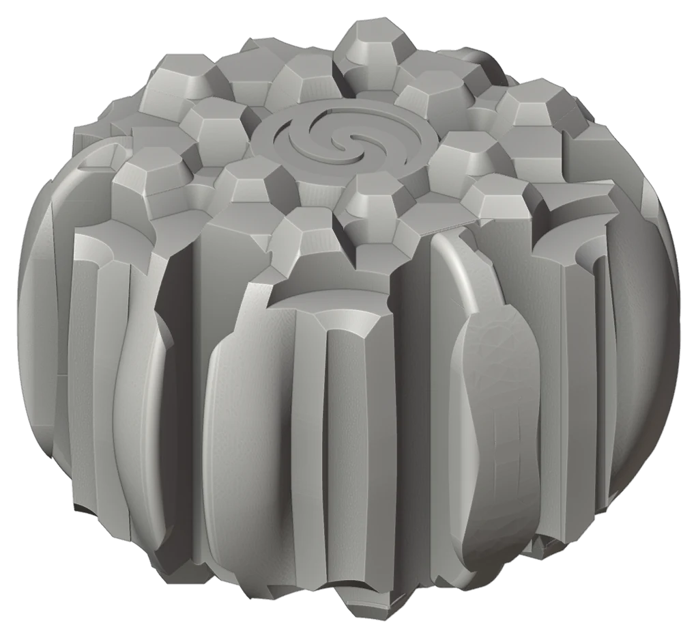
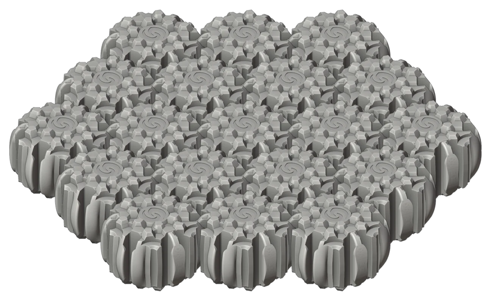
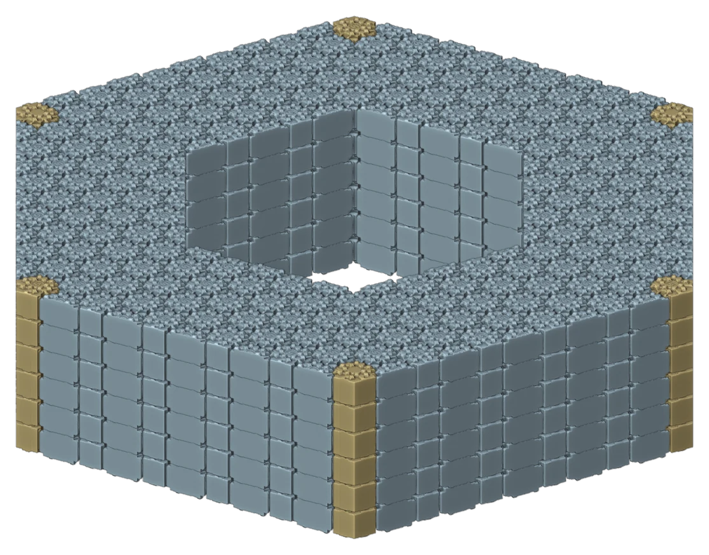
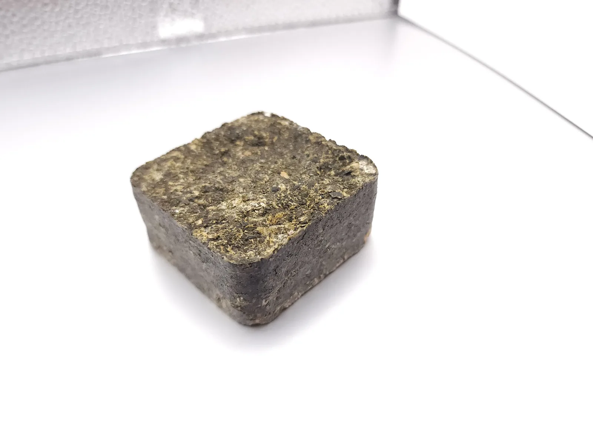
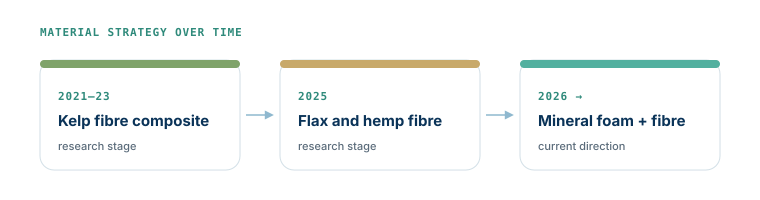
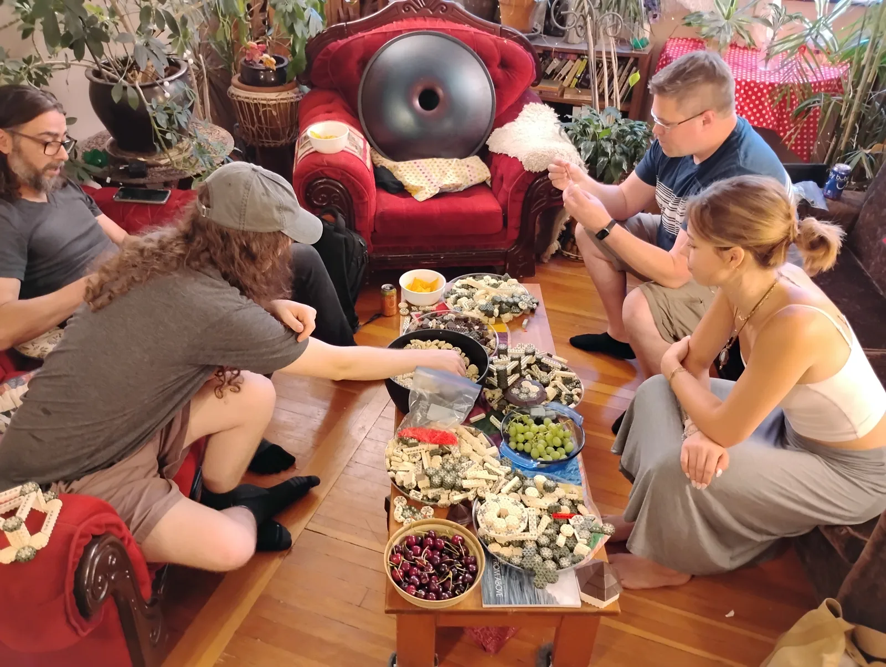
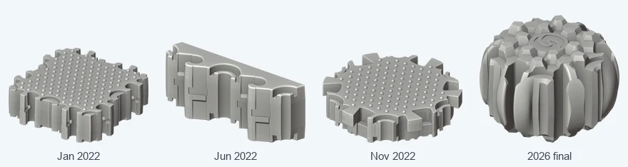
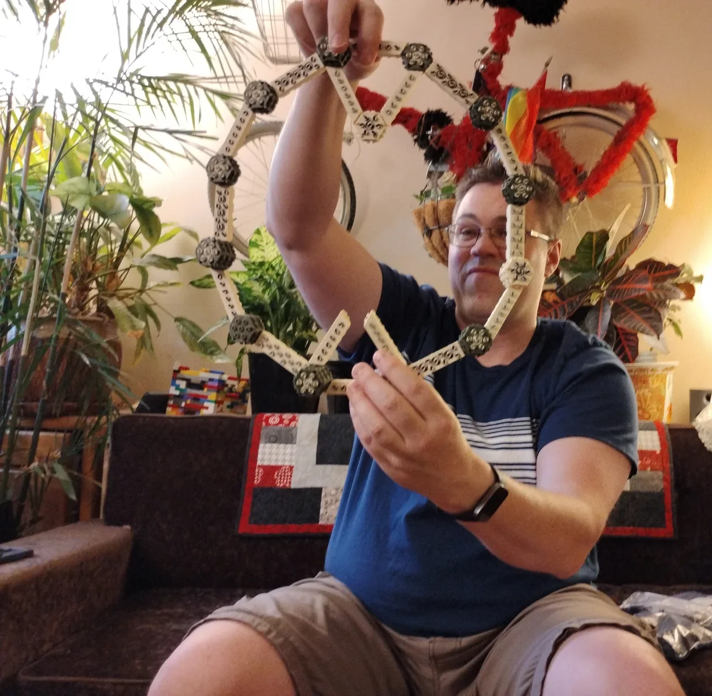

Build out into the water.
Rising seas will take the homes of hundreds of millions of people over the next thirty years. Floating infrastructure lets coastal communities build out onto the water, replacing land rather than losing it.
Why floating →SeaBrick is a low-cost, carbon-negative interlocking brick system for marine and flood-resistant infrastructure. It is also a nonprofit research program to create sustainable floating infrastructure that coastal communities can build themselves: docks, platforms, breakwaters and the foundations of buildings that rise with the water instead of fighting it.
Rising seas will take the homes of hundreds of millions of people over the next thirty years. Floating infrastructure lets coastal communities build out onto the water, replacing land rather than losing it.
Why floating →Everything in the marine infrastructure market today is concrete, steel or petroleum. Cement alone is 9% of global emissions. A SeaBrick stores more carbon than it took to make.
The material →Bricks are made close to where they are used, in low-tech plants that ship in a container, and put together by hand. The tools for adaptation belong to the communities that need them.
Try the builder →A SeaBrick is a hollow hexagon that floats. Bricks lock side to side into a mat that is strong but flexible, like chainmail. Courses stack, like Lego with hooked sides. Lay them flat for a platform. Stack them in rings for a tube or a tower. Tie the courses together with cables and the whole thing moves as one body in the water.



Each course sits a little offset from the one below, so it bridges the joints. Drag to turn it, or open the full builder for tubes and towers.
The material is a light mineral foam inside a dense mineral shell, with organic fibre throughout. The foam floats. The shell carries the load where bricks grip one another. The fibres mineralize over time into an internal scaffolding that gives the brick strength and flexibility, and the brick gets stronger as it ages.
Fibre is where SeaBrick began, with kelp. Where the material stands now.

Five years of work, one milestone at a time.

The SeaBrick material is a light mineral foam inside a dense mineral shell, with organic fibre throughout that mineralizes into an internal scaffold. Here is the thinking.

On 13 June 2026 a small group of friends, advisors and one very focused four-year-old spent an afternoon building with about a thousand printed model bricks. It was the first time the whole family of shapes had been in one room.

Five years, more than twenty versions and a few thousand 3D prints: how the SeaBrick went from a square slab to a hexagonal system brick.
SeaBrick Society exists to build low-cost, climate-resilient infrastructure for the coastal communities that need it most. It was founded by John Richardson in 2022 and has drawn in dozens of engineers, designers, researchers and climate activists since.
